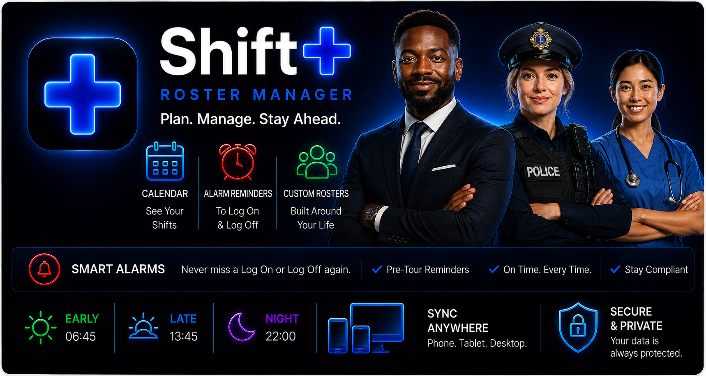

Nine-to-five workers
Keep a clear work calendar, record annual leave and stay on top of overtime without losing sight of the ordinary week.
YOUR TIME, CLEARER
Whether you work nine to five, rotate through shifts, or never have the same week twice, Shift + brings your calendar, work alarms and time off together.
Android app · Standard features available · Premium adds advanced planning and Home Assistant sync

ONE APP, YOUR WAY OF WORKING
Shift + is built to make each working week easier to see, whether it follows a familiar pattern or changes all the time.
Keep a clear work calendar, record annual leave and stay on top of overtime without losing sight of the ordinary week.
Read Early, Late, Night and Rest days at a glance, compare units, and let your active schedule drive your reminders.
Build a custom repeating roster, set shift times that suit the work you do, and keep changing plans visible in one place.
THE DETAILS THAT KEEP A DAY MOVING
See working days, rest days, leave, overtime and selected schedule markers in one monthly view.
Set reminders around a shift start or end. Use Book On and Book Off wording where it fits your workplace, then review upcoming alarms in Alarm Centre.
Track leave taken, planned and remaining. Record overtime separately and review your totals when you need them.
Genuine Shift + Android app capture · Select to enlarge
LOOK INSIDE SHIFT +
Explore genuine screens from the Android app. These captures illustrate the app; they do not change your roster or settings.
WATCH SHIFT + IN ACTION
See how Shift + helps make a working week clearer: a genuine Android calendar, work-alarm settings, Alarm Centre and a genuine Home Assistant dashboard. Captions are available in the player.
75-second Shift + promotional film. It uses official promotional artwork and genuine, sanitised Android and Home Assistant captures.
YOUR SCHEDULE, CONNECTED
With Shift + Premium, securely pair your schedule with Home Assistant. Bring current and next shifts, working status, leave and overtime into your dashboards and the automations you choose to create.
Shift + provides the schedule data. Your Home Assistant automations control your devices.
Explore Home Assistant